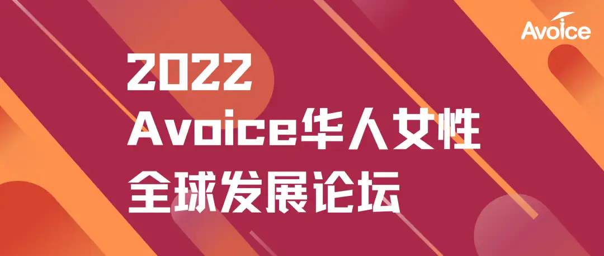

搭建合作交流平台
促进海外华人女性保护与赋能
Aovice成功举办首届华人女性全球发展论坛
北京时间2023年1月7日，首届Avoice华人女性全球发展论坛圆满举行。此次论坛由Avoice海外华人女性保护项目、海南省东方妙喜公益服务促进会共同主办。本次论坛旨在为致力于华人女性发展的组织与相关领域的学者嘉宾搭建知识共享网络，创造参与性别议题的实践机会，进一步拓展海外华人女性的生存空间和话语权。
论坛邀请了来自联合国妇女署、国际组织、学术机构、知名高校、科创公司等十余名国内外专家、学者线上参与，由The Wannabe Feminists博客创始人Wiley与Claire作为主持嘉宾，通过主题演讲、主题对谈、论文展示与评议三个环节，围绕科技、公益、职场、教育、法律、心理、政策等方面的性别数据，展开跨年龄段、跨领域、跨地区的知识分享与合作对话，在反性别暴力理论和实践方面为与会者提供了深刻且创新的观察视角。
观看流量：
Zoom会议直播观看人数达532人、全网转播观看人数总计3617人。
媒体曝光：
论坛成功举办的新闻见于人民网欧洲、港澳在线（公益）等国内媒体，搜狐、网易、腾讯、凤凰网等国内门户网站。

论坛伊始，主办方Avoice的发起人Yimar进行论坛开场发言，分享了海外华人女性在实现性别平等道路上的现状及Avoice成立的使命与愿景，正式拉开了本次论坛的序幕。
Avoice发言人Yimar
论坛主持人Wiley
论坛主持人Claire
环节一：主题演讲
探究女性移民面临的家暴/性别暴力与法律现状
联合国妇女署中国研究员兼美国加州伯克利大学法学院国际反歧视法法律研究组专家张理宁在题为《异乡人，性别暴力和法律》的演讲中提到，女性移民群体在异乡的生活面临人口买卖、畸形审美、媒体中的女性刻板印象等诸多挑战，这些挑战进一步加剧了她们遭受各种暴力的风险。张理宁强调：“‘法不可独行’，我们需要齐心协力，共同创造一个对性别暴力零容忍的世界。”
主题演讲嘉宾张理宁
以反家暴为例
探索青年女性如何参与、领导性别项目
北京市妇女理论研究会传统文化与妇女发展专业委员会理事陈政宏在题为《如何让青年女性参与、领导性别项目》的演讲中提出，女性救助并非只是简单帮助受家暴女性的活动，活动参与者需要明确救助立场，敢于决策并注意保护自己。在具体活动推进过程中，参与者要尝试多部门联动，提升对话能力。最后，陈政宏对如何可持续地推进性别项目方面进行了指导总结。
主题演讲嘉宾陈政宏
海外华人女性促进性别平等的参差经验
美国圣劳伦斯大学性别研究系助理教授王颖怡发表了题为《跨国迁徙、性别与政治：海外华人女性的参差经验》的演讲。王颖怡讲到了性别不平等对生活的塑造和影响，得出实现性别平等道阻且长，并且难以因为个体女性的成功而被改变的结论。随后，王教授在性别结构性分析中为与会者展示了不同制度形式对于女性的剥削，呼吁女性的权利和性别平等。
王教授说：“尽管人类会因身份阶级的差异而难以相互理解，但我们的任务正是联结更多不同社会层面的人群，发现其共性与特性并将她们团结起来，从而看见更多的可能性。”
主题演讲嘉宾王颖怡
环节二：主题对谈
互联网科技是否可以推动性别平等？
China Youth of Tomorrow(CYOT)CEO兼TEDx策展人Vera Zhang主持了 “互联网科技与性别平等”相关的主题对谈。Invisible faces作者兼NOTINSTUDIO创始人Larissa Leng、可道Codopia教育科技创始人兼Web3优质内容关键意见领袖(KOL)Sally Shen及咖菲科技创始人兼CEO石岚作为嘉宾，围绕互联网科技与性别议题展开了讨论。
三位嘉宾从算法歧视现象、隐藏性别及数据偏见等角度分析了互联网是否推动了性别平等，以及如何唤醒认知、弱化偏见，运用榜样力量并鼓励女性突破固有偏见、实现自我发展。
对谈嘉宾Sally Shen
对谈嘉宾Larissa Leng
对谈嘉宾石岚
对谈主持人Vera Zhang
如何促进亚裔女性在海外职场中打破行业壁垒，拓宽职业发展路径？
在ESG媒体平台着陆TouchBase创始人兼CEO国佳佳的主持下，赏创科技联合创始人兼首席执行官Emily，环球慧联(Global Women Connect)创始人、董事长兼首席执行官Dr.Polly Ng，Biorbyt生物高科技公司创始人、英国华人女性联盟第一任主席杨群等三位对谈嘉宾将学术与实践相结合，探讨了如何促进和拓宽亚裔女性的海外职业发展路径。
嘉宾们分享了华人女性身份歧视的亲身经历及应对策略，提倡女性群体提升自我能力、不断发展，呼吁女性与伴侣共同承担养育责任，并且要勇于打破传统性别束缚和文化差异，以自信、自立、自强、乐观的心态和能力来平衡职业与家庭。
对谈嘉宾Dr.Polly Ng
对谈嘉宾Emily
对谈嘉宾杨群
对谈主持人国佳佳
环节三
论文展示及评议
为了促进性别议题研究、搭建学术平台，论坛特设论文展示与评议环节，并邀请斯坦福大学慈善与社会创新中心博士后兼香港中文大学性别研究课程助理教授韩铃，Avoice海外华人女性保护项目理事王延萍，华盛顿大学性别研究博士兼美国圣劳伦斯大学性别研究系助理教授王颖怡担任评议人。
该环节共展示了《新媒介赋权下的女性网络行动——基于重庆某大学卫生巾互助盒活动的研究》、《风险社会：疫情下被家暴女性寻求庇护的新困境及路径研究——以北京市为例》、《新冠疫情发生后欧洲地区应对家庭暴力的政策研究》三篇论文，评议专家认为，三篇论文围绕女性生理卫生关爱、疫情下的家庭暴力等话题进行了观察研究，同时也关注了海外华人女性的生存状态。
论文评议嘉宾韩铃
论文评议嘉宾王延萍
未来，Avoice华人女性全球发展论坛有望成为促进华人女性保护与赋能的合作交流平台，创造参与性别议题的实践机会，进一步拓展海外华人女性的生存空间和话语权，期待在推动性别平等的道路上，有更多人参与，更多人发出声音，共建爱与平等的女性家园！
Avoice海外华人女性保护项目简介
Avoice海外华人女性保护项目（Against Violence to Overseas Chinese Women Program）于2020年新冠疫情初期在比利时开启试点，致力于消除性别暴力、促进性别平等,力图建立一个广泛有效的反家暴救助网络，为面临家暴威胁的海外华侨华人女性提供充分、持续的保护和救助。
项目通过与政府部门、海外华人组织、社会组织、行业专家等建立合作网络，联合更广泛的公益力量，倡导公众对海外华人女性生活困境的关注和支持，为她们创造安全、平等的生存和发展环境，帮助她们从家庭暴力的受害者，成长为推动性别平等的倡导者和实践者。目前，项目已覆盖至欧洲全部国家和北美部分国家。
撰文 I 吴丹 秦科 田博
审校 I 赛儿 张妮 方唐多多 符芬菊
图片 I 汤欣然
排版 I 戴翰林